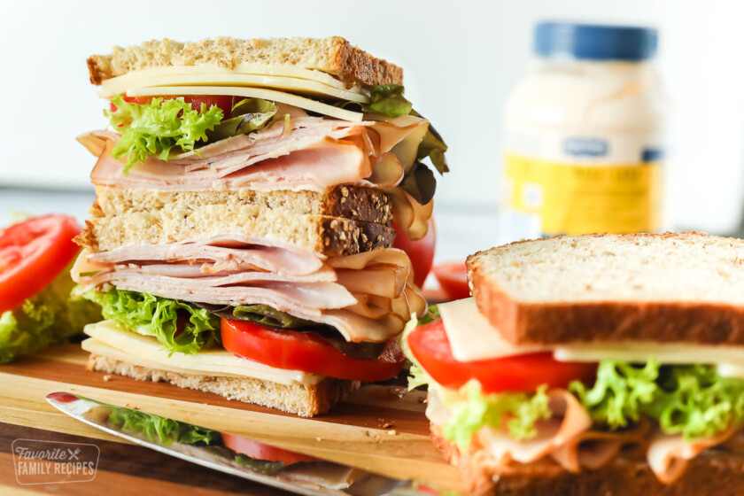

Turkey Sandwich

Description
A turkey sandwich. Simple, hearty, and ready for any party.
Ingredients
- 2 slices whole wheat bread
- 2 tablespoons mayonnaise
- 4 ounces sliced or shaved deli turkey
- 4 slices Provolone cheese (or your favorite sliced cheese)
- Green leaf lettuce
- 2 slices fresh tomato
- Salt and pepper to taste
Steps to Success
- Spread mayonnaise on bread slices and layer one slice with sliced turkey, Swiss cheese, lettuce, tomato, salt and pepper, and any other additional toppings.
- Top sandwich with remaining bread slice, cut into halves, and serve.